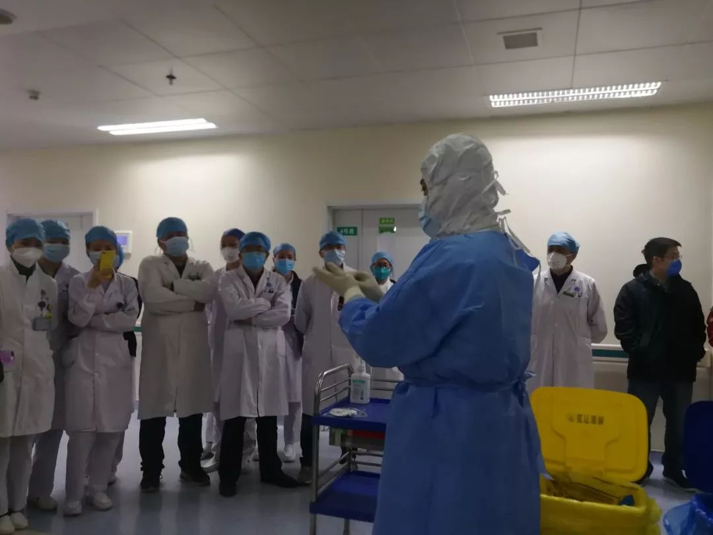
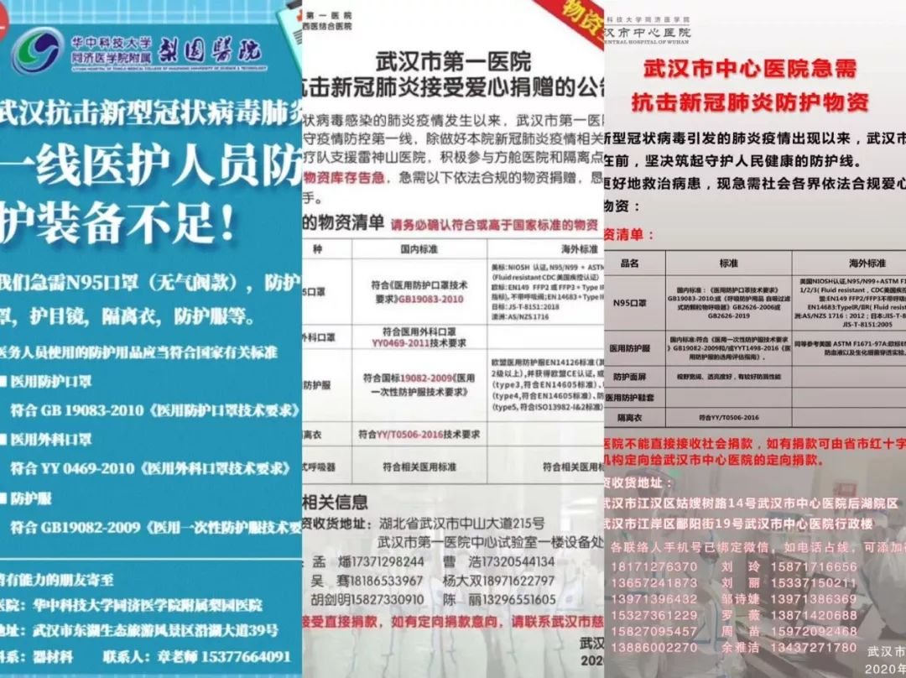
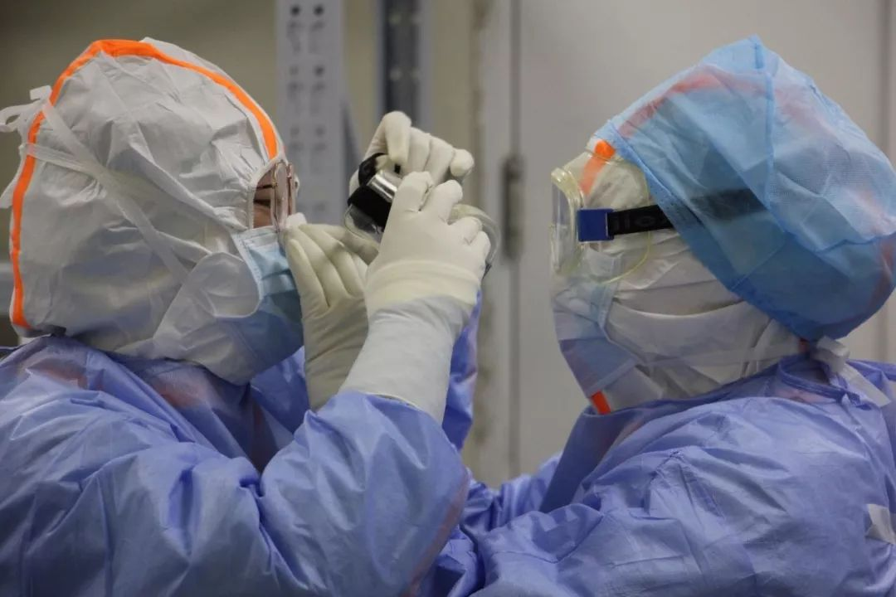

一线被感染医护群像：有人崩溃大哭，有人迫不及待重回前线
原文链接 备份链接 医用物资频频告急，奋战在抗击新冠肺炎疫情一线的医务人员，他们在经历怎样的生活？ 他们中，有人被确诊感染后写下了遗书，有人在床边崩溃大哭，有人被家属奉劝不要去一线……当医护人员被感染变成患者时，他们会和普通武汉市民一样恐 …
记者/兰子木 韩谦 李佳楠实习记者/周缦卿 龙天音****
编辑/杨宝璐 宋建华

院感科在培训医生正确穿戴防护服
“院感科”，全名“医院感染管理科”。顾名思义，其主要工作就是对医院感染进行有效预防与控制。
在此次新冠肺炎疫情攻坚中，如何进行“院感防控”也面临着前所未有的大考。据官方通报，截至2月11日24时，全国共报告医务人员确诊病例1716例，包括6人不幸死亡。其中湖北省报告了1502例医务人员确诊病例，武汉市1102例，占湖北省医务人员确诊病例的73.4％。
疫情爆发后，一家三甲医院院感科医生透露，现在各地的日常感控工作已经基本“停滞”，在全力应对疫情的同时，正在努力“补课”。
在前往武汉的多支医疗救援队中，都设立了专职的院感防控人员，他们告诉北青深一度记者，“不让每一位队员感染，是我们存在的意义。”

院内感染最早追溯到一月初
医护人员的感染最早可以追溯到一月初。
一份2月3日的内部统计数据显示，华中科技大学同济医学院附属同济医院（简称同济医院）医护人员确诊感染36人，疑似3人。多名医生向深一度证实，疫情早期因防范意识不强，1月20日之前，医护人员集中出现被感染的情况，如今很少再有人感染。截至2月11日，同济医院医护人员确诊感染40余人，属于武汉医院中医护人员感染较少的医院。
据同济医院急诊科医生陆俊回忆，平时在急诊科看病，医护人员一般是戴普通医用口罩，由于当时知道可能会有不明原因发热的病人，所以提升了一个等级，开始戴N95防护口罩。但当时医护人员并不清楚病毒会人传人，传感性这么强，防护没有提到最高级别，未穿戴防护服和护目镜。
同济医院外科医生张明也向深一度记者证实，1月初医院职工进行体检时，仅有部分人佩戴口罩。
在1月10日或更早一些时候，武汉大学人民医院呼吸内科副主任医师余昌平作为疫情防治专家组成员，在医院内开始会诊疑似不明原因肺炎的发热病人，当时医院内已设立病区专门收治此类病人。“这类病人的肺部CT呈现明显的病毒性肺炎症状，多为双肺病变，平时很少见，当时一天就能同时看到五六个。”
之后很快也被感染的余昌平告诉记者，此次新冠肺炎的症状在初期容易被忽视，“之前的SARS、禽流感等传染性疾病，普遍会出现发热较高的高烧，还会出现剧烈咳嗽，而我的症状就是发烧，温度也不很高。”余昌平甚至还听同事告诉他，有些医护人员在无明显症状的情况下，肺部CT已呈病毒性肺炎症状，也有些病例仅存在喉咙不适的症状，肺部CT也正常，但核酸检测呈阳性。
1月14日起，余昌平出现发热症状，高烧38度左右。他当时并未重视，直到17日，在科室聚餐前，为了防止影响同事，才做了肺部CT，结果显示双肺部边缘存在较轻的磨玻璃絮状病变，“我专门搞这个的，一看就知道被感染了。”当天，余昌平同另一位科室同事均住院隔离。
住院第三天，余昌平开始病情加重，出现胸闷、喘气的症状，1月23日前后病情最为严重，出现呼吸困难，“当时用鼻导管给氧，氧流量开到每分钟5-6升，就只能躺在床上不能动。”直到1月24日后，余昌平呼吸困难的症状才慢慢缓解。
余昌平认为，新冠肺炎为自限型疾病，“只要挺过和病毒的’拉锯战’时期，就会慢慢好转。吸氧、药物治疗是为了帮助病人把危险期度过去，维护身体机能的稳定，主要还是看自己的身体素质和恢复能力。”
但并非所有的医生都拥有这份体质和幸运，2月7日，武汉中心医院眼科医生李文亮去世，年仅34岁；2月10日，同济医院器官移植科林正斌教授也因新冠肺炎救治无效死亡。

2月14日，新闻发布会通报了医务人员确诊病例1716例
疫情初期被忽略的“人传人”
一开始，余昌平就认为这类不明原因肺炎多半存在人传人。在他接诊的患者中，仅有一人在华南海鲜市场工作，其余患者均无接触史，“我们医院在武昌，华南海鲜市场在汉口。当时接诊的病人都是从不同地方来，不存在聚集性，这种情况下多半就是存在人传人。”
即便如此，由于当时政府并未发布存在人传人情况，余昌平在接诊时未做充分的防护措施，仅佩戴医用口罩，“当时警惕是警惕，但也没特别重视”。
而距离华南海鲜市场只有1公里左右距离的武汉中心医院后湖院区，首当其冲地受到了波及。后湖院区的医生徐杰告诉深一度记者，“那边（华南海鲜市场）一旦有问题，首先就会送到我们这里，早期就是我们医院收治的肺炎病人比较多。”
徐杰告诉深一度记者，在中心医院后湖院区也成为发热病人定点医院前，已增加了六七个呼吸内科病区，每个病区约三十多个床位。徐杰称，当时新增的床位主要是为了收治医院内被感染的医护人员。
1月3日，李文亮医生被训诫后，徐杰的科室内部便口头通知，不要谈论关于肺炎的事情。由于医院离华南海鲜市场近，当时还有很多人过来询问徐杰具体情况，“我当时还到处忙着’辟谣’，让大家不要惊慌，这个东西还没确认是SARS，需要等官方通告。”
徐杰表示，当时他也注意到了呼吸内科就诊人数增加。“原来食堂有一扇门是正对着呼吸内科的，那会儿那扇门也封了，我们只能绕道从另一扇门走。他回忆，大概在1月15日前后，随着病人越来越多，医护人员被通知开始佩戴医用口罩。“当时胃肠外科和眼科都合并了，胃肠外科病房腾出来专门收治这类病人。”
徐杰所处科室并不接诊发热病人，但科室里一位主任在2月10日前后出现发热症状，并转院到金银潭医院进行插管治疗。此外，还有两名医生也被感染。
多名中心医院医生向深一度记者表示，目前中心医院实际确诊或疑似感染新冠肺炎的人数在150人以上。而医护人员大规模感染，大多发生在前期很多人不知情之时，或在官方发布存在人传人情况之前。
同济医院的外科医生张明告诉深一度，据他了解，最初，因为呼吸、内分泌和ICU科室出现人员感染的情况，医院内部才开始紧张起来。
张明介绍，元旦过后，医院内部开始提醒医生做好防护，发现发热病人要重视，很多医生也意识到可能存在传染风险。此后，外科医生查房时也开始佩戴口罩，直到1月中旬，才真正重视起来，但佩戴的口罩也并非都是外科口罩。在防护不到位的情况下，他认识的外科医护人员中至少有6、7人确诊感染。
那时候，医院处于“内紧外松”的状态，医护人员知道做好防护，但来看病的患者并不知道。发热病人和其他病人发生聚集，感染面扩大，医护人员在大量接触病人和家属的过程中被传染概率也变大。
同济医院呼吸与危重症科主任赵建平则告诉深一度，从1月初到20日之前，同济医院的感染科、急诊科和呼吸科等重点科室防护较好，当时的防护状态和现在相同，达到二级防护标准，因防护较好，感染科、急诊科和呼吸科感染人数都很少，外科、检查科室等其他不存在和该病接触的科室反而感染人数较多。

全副武装的医护人员
院感防控机制需重视的问题
医护人员被感染几率成倍增加的重压之下，院感防控系统需重视的问题，也暴露出来。
一月底，一支援鄂医疗队抵达武汉后，前往定点援助医院进行对接。首次见面，双方就在隔离病房的改造上产生了分歧。
“对于呼吸道传染病病房来说，三区两通道是一个最基本的要求。”
按照受援助医院的设计，整栋住院部大楼都已被改建成隔离病房，分为污染区、清洁区和缓冲区三个部分。但按照现有设计，医务人员在脱去防护设备后，还需再次返回污染区，才能离开。这遭到了多名医疗队专家和院感组成员的反对。该医疗队院感组沈成介绍，所谓“三区”是指清洁区、缓冲区、污染区独立划分，“两通道”则是指进出隔离病房要从两个单独的通道经过，不能走“回头路”。
在对接现场，受援助医院的负责人虽然表达了特殊时期改造上的困难，但还是在当晚再次对病房进行了改造。虽然仍然无法达到“两通道”，但通过加装墙体、打通墙壁等办法，最终达到了医务人员脱去防护装备后不用再次返回污染区的要求。
对于这样的现象，作为省会城市三甲医院院感科医生的秦明并不陌生。秦明告诉记者，除去特殊的传染病医院，多数医院原本并不具备收治传染病病人的条件。以“三区两通道”的设计，将会大大减少医院收治病房的面积，“但如果没有这样的设计，无疑会增加院内感染的机率。”
驰援武汉的院感科医生沈成表示，他所在的医疗队抵达武汉后，院感组是最先投入工作的部门，压力很大。“不让每一位队员感染，平安的回去，这就是我们存在的意义。”
秦明告诉记者，理想状态时，每200到250个病人，就应该配备一名专职的院感人员，工作内容包括每日对临床科室操作的巡查，对病区发热感染状况的监控，以及对出院病人的随访。“但很多综合医院达不到这样的配置。”
在人手匮乏的情况下，这种对医护人员的理想保护状态难以实现。1月底，本来在外科的张明被分配到同济医院本部的发热门诊工作。他告诉记者，发热门诊每日15人分做三班轮流值班，每天接诊1000多例病人；从1月底起，一班安排8个人，每日接诊800左右，他一天要看40个病人；方舱建成后，加上小区实行封闭，如今，接诊人数下降了不少，但每日仍有300人左右。
徐杰则被调至南京路院区急诊外科坐诊。负责给外科诊断病人进行预检，也有一些发热病人，需要进行体温检测、拍肺部CT。“南京路院区的外科医生有些已被感染，有些可能职业暴露了还在隔离，目前人手不够，像整形科、妇产科、眼科、皮肤科的医护人员都在往前顶。”
原则上，若有医护人员被感染，与他有过接触的人员都需要隔离观察。但徐杰表示，目前条件并不允许，“如果按这个标准隔离，医院都得停摆，没人干活了。”

部分医院发布的物资求助信息
疫情突袭下的防护物资紧张
深一度通过数位在武汉抗击新冠肺炎一线的医生了解到，目前，各家的防护物资仍在较为紧张的状态。
武汉大学人民医院一位负责物资捐赠的工作人员告诉深一度，医院的防护口罩、防护服等一次性防护用品紧缺，在政府配送、社会捐赠和出资购买的情况下，能保证一线发热门诊和病房的医护人员的防护需求，但所存物资一直仅够维持两三天的用量。
徐杰则称，目前防护物资的质量“每天都不一样”。“防护服有些可能是二级标准的，有些则是工业标准的；有西班牙文的、德文的、还有没商标的。根本不知道是哪里产的，给什么就穿什么，没得挑。我们这还是急诊科，是优先保障的，其他科室的情况就更可想而知了。”
人民医院疼痛科主任蔡毅目前在后湖院区负责一个病区患者治疗。他表示，由于防护服紧缺，目前已经开始控制查房时进入污染区的医护人员数量，“只能是我们呆在里面的时间长一点，减少防护服的消耗。”
秦明告诉记者，对于医用N95口罩、面屏、防护服等高级别防护用品的储存，资金成了一个绕不过去的难题。部分地区的卫健委会给予医院专项资金来购置防护设备，但各地政策不一，“如果没有这笔钱，储备量会更少。”秦明所在的城市，前两年曾下拨过一笔20万左右的专项资金，他们用这笔钱的一部分，买了三千只医用N95口罩。疫情爆发后，秦明曾清点过自己医院的防护用品库存，“如果同样是比较严重的情况，紧紧巴巴能用一个月吧。”
他希望的是，未来防护用品上的花销可以由有财政支持的疾控部门负责，又或是与器材供应商达成一致，形成一种“轮转”的机制，“比如我储备了2万个N95口罩，快过期的时候，可以转移到需求量更大的传染病医院去。”

医生两人一组练习穿戴防护服
呼吁建立统一的规范流程
秦明形容，现在各地的日常感控工作已基本“停滞”，在全力应对疫情的同时，也正在努力“补课”。
正式进入一线后，沈成所在的医疗队要求，所有人必须把同伴当作潜在的“疑似病例”。
隔离病房内，潜在的风险不止来自于病房的布局。所有操作方式都是天翻地覆的，从病人交流时的方向角度，到输液操作时的姿势，感控渗透在每一个细节。沈成和其他院感组成员每天还要检测所有队员的体温，分早中晚三次前往病区，监督所有人的操作流程。他们曾发现，有护士在为病人打针后，习惯性地脱去了最外层的防护手套。
在武汉，一支援助医疗队即将给本地医务人员培训防护服的穿脱操作，为了让所有人重视，演示者在一开始就说：“这是咱们保命的东西。”但培训开始后，演示者很快因为穿戴帽子和口罩的顺序与院感组成员出现了分歧。
“你去每个医疗队看，可能穿脱防护服的顺序能有几十个不同的版本。”秦明解释，这次疫情爆发后，很多专家建议先戴口罩再戴帽子，但在实际操作中，一些女性医务人员头发长，先戴口罩有导致滑落的风险。
同样存在分歧的，还有摘下口罩的方式。目前普遍的操作方法，是在摘口罩时避免双手的触碰，但秦明前往医疗公司培训时，对方明确建议，一只手扶住口罩，“一些人操作不熟练的话，可能导致口罩的回弹，危险更大。”
“相比临床操作上的统一规范，在院感防护方面，从卫健委到医管局再到医院，各种要求并不统一。”秦明觉得，细节上的分歧，恰恰反应出了这方面亟待提高。防护装备的品牌不同，操作方式也不一样，他曾想联合专家制定一个统一的规范流程，“但这个工作真的太难了。”
在机制背后，人的因素更加明显。
秦明表示，相比防护知识和操作，更大的难度在于意识的提高，“特别是一些老的医务工作者，可能因为经历的多了，反而会麻痹大意。”
在秦明看来，国内院感部门大规模成立1990年到1995期间，“那时一些地方都是年纪大了、上不了夜班的医护人员去院感科，成了一个养老的部门。”
即使在现在，院感人才的储备也并不理想。秦明说，在医疗职称体系中，院感人员没有单独的序列，晋升空间不大，这也导致很多人不愿意学习相关专业。
秦明所学的就是公共卫生专业，借鉴国外相关领域的经验，他认为疾控体系最先需要提升的是人员上的短板，如果一些有过临床经验的人进入预防领域，专业能力的提高势必会带来院感防控的高效。
在突然爆发的疫情之下，医疗人员队伍似乎很难做到毫发无伤。秦明说，几乎每次重大的传染病都会对感染控制和疾病预防起到巨大的推进，“但是，希望不要每次的代价都如此巨大。”
（除余昌平、陆俊、蔡毅外，其他采访对象均为化名）
【反侵权公告】本文由北京青年报与今日头条联合出品，未经授权，不得转载。


送别李文亮医生：愿天堂没有病毒| 深度报道

鄂A牌车30小时归乡记 | 深度报道

一个武汉红十字会志愿者的自述 | 深度报道


原文链接 备份链接 医用物资频频告急，奋战在抗击新冠肺炎疫情一线的医务人员，他们在经历怎样的生活？ 他们中，有人被确诊感染后写下了遗书，有人在床边崩溃大哭，有人被家属奉劝不要去一线……当医护人员被感染变成患者时，他们会和普通武汉市民一样恐 …
原文链接 备份链接 对病毒的未知、医疗物资缺乏，又因高强度的工作压力影响到免疫力，导致医护感染达到高峰。随着医护人员防护意识、对病毒认识的增强，相关防护措施到位，后期被感染的医护人员应该越来越少 ****文 | 《财经》 …
原文链接 备份链接 经济观察网 记者 瞿依贤 湖北省第三人民医院呼吸内科医生胡晟在除夕这天拿到了自己的CT片子：双肺几乎全白。他科室的同事看到结果，好几个都哭了。 胡晟是在发热门诊被感染的。湖北省第三人民医院在1月8日开设发热门诊，他从呼 …
原文链接 备份链接 【财新网】（记者 周泰来 实习记者 黄晏浩 陈丽金）湖北省鄂州市由于新冠疫情防控压力大，已公开呼吁全市退休、离职医护人员和个体医务工作者积极参与疫情防控工作。据鄂州市政府官网，鄂州市新型冠状病毒感染的肺炎防控指挥部 …
原文链接 备份链接 “湖北省委书记说‘绝对不能让黄冈变成第二个武汉’，希望其他城市不会重复武汉的悲剧！” “我上班去了！我的防护绝对专业，莫担心！你把我说的都写出来，就说武汉一线医护再难也能坚持再上一阵子班，关在屋里的普通老百姓先不要 …